Node.JS
WebSockets
présentation, performances, clustering...
- Un exécutable:
node
- Un moteur performant:
v8
- Un cœur minimal: KISS
- Une API filesystem & network:
HTTP/1.1
- Mais surtout une API asynchrone et un
single-thread event loop
En tous cas c'est plus facile qu'Erlang, et vachement plus puissant que PHP
Node.JS - Installation
git clone --depth 1 git://github.com/joyent/node.git
# or git clone git://github.com/joyent/node.git if you want
# to checkout a stable tag
cd node
git checkout v0.4.12 # optional. Note: master is unstable
./configure
make -j2 # -j sets the number of jobs to run
[sudo] make install
Node.JS - HTTP/1.1
Les navigateurs supportent tous partiellement HTTP/1.1. Idem pour les serveurs.
- Un nouveau verbe:
UPGRADE
- Le cache:
ETag, If-Modified-Since
- Réseau: Connexions persistantes, Pipelining, Chunk Transfer Encoding...
- Et plein d'autres trucs sur www8.org
Node.JS supporte tout le protocole.
Node.JS - Modules
Don't Repeat Yourself
Don't Reinvent the Wheel
Learn 2 Search, mother fucker!
- Une implémentation de CommonJS:
require()
- Un dépôt de modules:
NPM
There's a module for that
Node.JS - API asynchrone
var fs = require('fs');
fs.readFile('fichier1', function (err, content) {
if (err) {
// Cas d'erreur
} else {
// "content" instance de "Buffer"
console.log(content.toString());
}
}
console.log("afficher avant réponse I/O");
Node.JS - API asynchrone
var fs = require('fs');
fs.readFile('fichier1', /* ... */ );
fs.readFile('fichier2', /* ... */ );
fs.readFile('fichier3', /* ... */ );
console.log("lecture de 3 fichiers");
console.log("impossible de prédire")
console.log("l'ordre de réponse");
Node.JS - API asynchrone
Single-Thread Event Loop: l'analogie du roi
Le roi ordonne à ses messagers, qui reviennent dès qu'ils le peuvent, et le roi traite les réponses au fur et à mesure, une à la fois.
Single-Thread Event Loop: l'analogie du roi
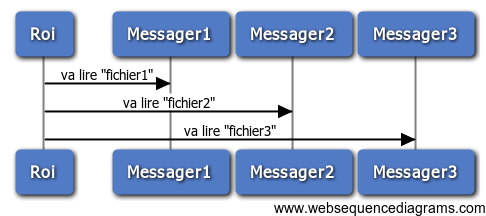
Single-Thread Event Loop: l'analogie du roi
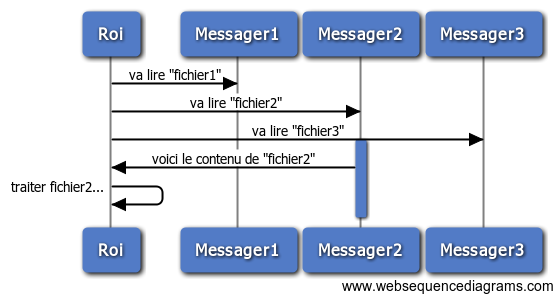
Single-Thread Event Loop: l'analogie du roi
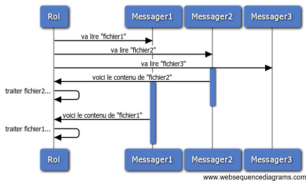
Single-Thread Event Loop: l'analogie du roi
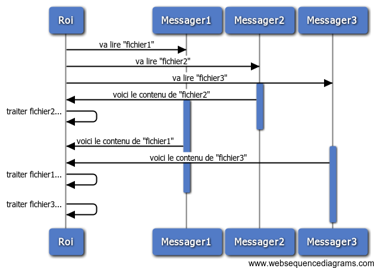
Single-Thread et performances
On y reviendra plus tard...
Pour l'instant, place au fun!
Web Sockets
- Connexion persistante
- Communication bi-directionnelle
- À travers un socket dédié
Socket.IO - Les WebSockets faciles
- Serveur: Module Node.JS
- Client: Une librairie multi-plateforme
- Support de moults modes de communications
- Choix du transport en fonction du contexte
Socket.IO - Le serveur
var app = require('http').createServer(function (req, res) {
/* ... */
}).listen(8000);
var sockets = require('socket.io').listen(app).sockets;
// Nouveau client
sockets.on('connection', function (client) {
// Évènement envoyé par le client
client.on('client→serveur', function (data) {
// Envoyer un évènement à tous les autres clients
client.broadcast.emit('serveur → client', 'data');
});
});
Socket.IO - Le client
La librairie client est intégrée dans le serveur
<script type="text/javascript" src="/socket.io/socket.io.js"></script>
Socket.IO - Le client
L'API est uniforme et cohérente
// Connexion
var socket = io.connect();
// Évènement envoyé par le serveur
socket.on('serveur → client', function (data) {
/* ... */
});
// Envoyer un évènement au serveur
$('#button').bind('click', function () {
socket.emit('client → serveur', 'data');
});
WebSockets - Use cases
Ce serait cool si je pouvais envoyer des données du serveur direct aux clients
WebSockets - Use cases
- Messagerie instantanée
- News en temps réel
- Présentation contrôlée à distance ?
Socket.IO - Use cases
- Présentation contrôlée à distance ?
// Serveur
client.on('next', function () {
sockets.emit('next');
});
// Client
socket.on('next', function () {
$.deck('next');
});
Socket.IO - Use cases
- Présentation contrôlée à distance ?
Web Sockets - Use cases
- Présentation contrôlée à distance
Vous auriez pu suivre cette présentation en live, mais ce n'est plus vraiment "live" là :)
Par contre tout est sur github: github.com/naholyr/lyonjs2011-10
Node.JS - Performances
- Node.JS est rapide
- V8 est le moteur le plus performant
- Mais...
Node.JS - Performances
Mais Node.JS est mono-tâche
fs.readFile('fichier1', function (err, content) {
calcul_tres_long(); // 10 s
});
fs.readFile('fichier2', function (err, content) {
// j'ai fini de lire "fichier2" ...
// ... mais je dois attendre ...
// ... la fin de "calcul_tres_long()"
// :(
});
Node.JS - Performances
- Node.JS est simple
- Mais Node.JS manipule des concepts complexes
Noob friendly ?
Certains "experts" (*) voient ça d'un mauvais œil.
Node.JS - Performances
Node.JS is cancer
Ted Dziuba
(NDLT: dans ce contexte, "expert" = "gros élitiste de mes deux")
Node.JS - Performances
Les solutions ?
- Ne pas faire de gros calculs :)
- Déléguer les gros calculs (
fork, spawn, un queue externe...)
- Tirer parti de mon CPU 24 cœurs ? (
fork, cluster)
Node.JS - Performances
Cluster
learnboost.github.com/cluster
var cluster = require('cluster');
cluster(require('./app'))
.use(cluster.logger('logs'))
.use(cluster.stats())
.listen(3000);
Node.JS - Performances
Cluster & Load Balancing
- Utiliser le module de TJ Holowaychuck
- Utiliser le cluster intégré dans Node.JS version ≥ 0.5.10
Detected 2 cpus
Worker 6790 online
Worker 6789 online
Clustering - c'est pas facile
Clustering - c'est pas facile
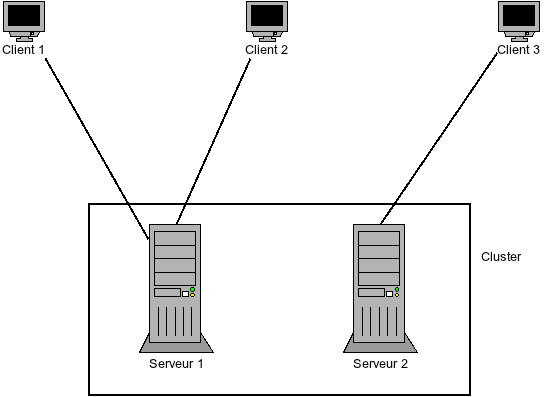
Clustering - c'est pas facile
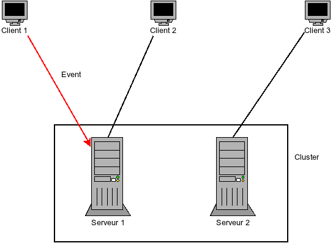
Clustering - c'est pas facile
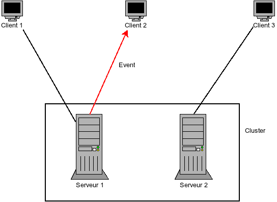
Clustering - c'est pas facile
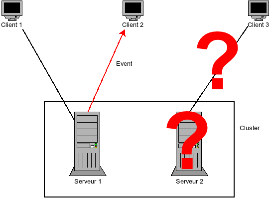
Clustering - la solution
- Quand un serveur reçoit un évènement, il doit le diffuser à tous les autres nœuds du cluster
- Mettre en place un bus de messages
- Temps réel
- Cluster-friendly
Clustering - bus de message
Clustering - bus de message
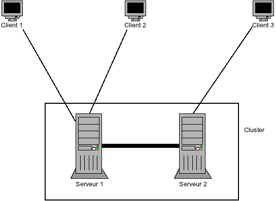
Clustering - bus de message
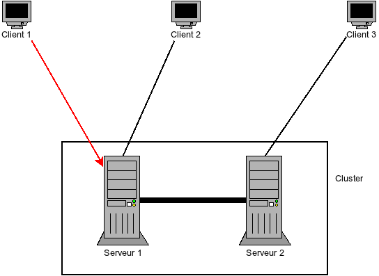
Clustering - bus de message
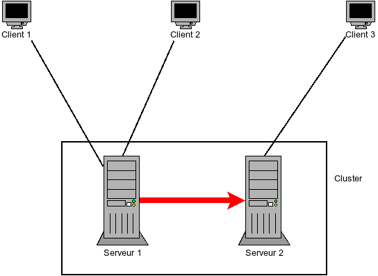
Clustering - bus de message

Clustering - les solutions
- Mettre en place un bus de messages
- Profiter des solutions existantes
Oui mais lesquelles ?
Qui...
- ... est performant pour la transmission de messages ?
- ... est nativement "cluster-friendly" ?
- ØMQ, AMQP, Redis...
Clustering - Redis est votre ami
- Se "clusterise" bien nativement (sharding, réplication)
var redis = require("redis");
var client = redis.createClient();
Redis PUB / SUB
// S'inscrire à un channel
client.subscribe("channel");
client.on('subscribe', function (channel) {});
// Recevoir un message sur ce channel
client.on('message', function (channel, msg) {});
// Envoyer un message sur ce channel
client.publish("channel", "my message");
Clustering - Redis est votre ami
- Intégration native dans la plupart des modules:
- Express/Connect: sessions
- Socket.IO: infos clients
Clustering - Redis est votre ami
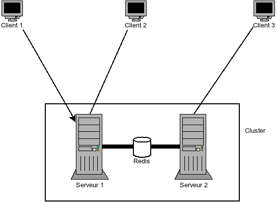
Clustering - c'est facile
Configuration de Redis
/etc/redis/redis.conf
Clustering - c'est facile
Sessions Express/Connect
var RedisStore = require('connect-redis')(connect);
connect.session({
"secret": 'my secret string',
"store": new RedisStore(/* info */)
})
Clustering - c'est facile
Socket.IO
var RedisStore = socketio.RedisStore;
io.configure(function () {
io.set('store', new RedisStore({
// client déjà instancié
"redisClient": client,
/* info */
})
);
});
Clustering - c'est facile
Multi-core avec "node cluster"
- Les process partagent les sessions via Redis
- Les process partagent les WebSockets via Redis
- Ajouter les partages requis :)
Clustering - c'est facile
Load-balancing avec un reverse-proxy
- "cluster" fait du load-balancing entre les process d'une même machine
- Utiliser tous les cœurs de sa machine c'est cool, mais plusieurs machines c'est mieux :)
Les solutions classiques qui aiment bien les WebSockets
- Varnish (profitez-en pour apprendre à gérer les headers de cache client, et les ESI c'est cool aussi)
- HAProxy
Bonne pratique: utilisez toujours un reverse-proxy, même avec une seule machine derrière :)
Merci !
Des questions ?
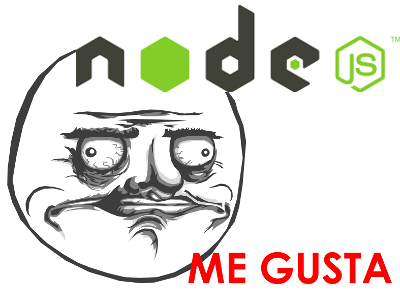
Les questions / commentaires
Redis pub/sub ça marche pas en cluster !
Ah oups. Par contre c'est en dév actif. La solution: comme on ne pourra pas faire de scaling horizontal sur ce "bus de message", avoir une instance de Redis dédié à cette tâche et uniquement cette tâche pour limiter sa charge.
Les questions / commentaires
Est-il possible de "prioriser" les callbacks de plusieurs appels asynchrones "simultanés" ?
Pas d'API native pour ça, néanmoins si le besoin se fait sentir le plus simple est sans doute de faire du séquentiel (tout en gardant les API asynchrones non bloquantes, grâce à des modules comme async). Sinon en jouant avec un callback unique et un flag global on doit pouvoir faire quelque chose.
Les questions / commentaires
Le troll de Ted était pourri, mais qu'en est-il ressorti ?
Son troll était vraiment velu, malpoli, mal amené, plein de dénigrement puant, bref horripilant. Néanmoins il a apporté de vrais débats, et a pointé du doigt un aspect très important et hélas négligé de Node par les débutants: son côté mono-thread. Néanmoins j'insiste sur le fait que ce n'est pas un défaut du langage mais un choix de conception (qui a l'avantage de terriblement simplifier la gestion des "race conditions" par exemple). Sans son troll, la question du clustering et du fork de process ne se serait pas posée aussi fort, et c'est donc positif.
Les questions / commentaires
Quels cas d'utilisation pour Node ?
En gros à chaque fois qu'on doit faire beaucoup de réseau ou de filesystem, il est meilleur que les langages "classiques" de part son API asynchrone (pendant que j'attends le résultat d'une requête SQL, je ne glande pas, je continue à répondre aux autres utilisateurs par exemple). De plus malgré une API haut niveau, on a accès à toutes les couches basses. Quelques use-case ont été cités: streaming, site web à forte concurrence d'accès, pseudo temps réel, et même une appli qui avait servi à contrôler du débit en sortie de routeurs (très bel exemple).
←
→
#